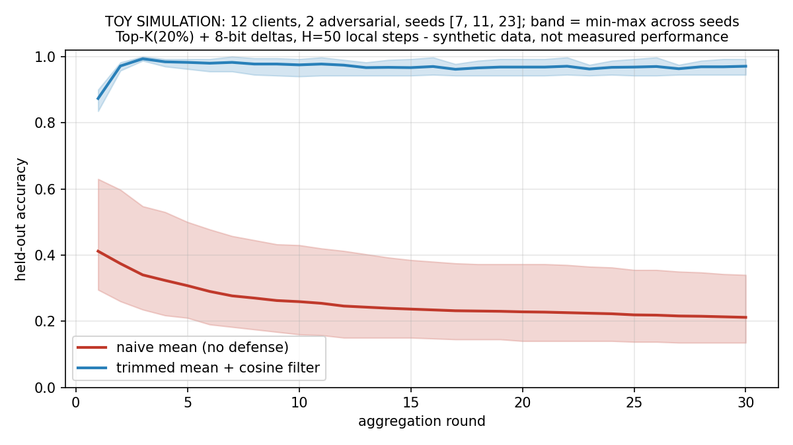

Research notes for a desktop AI companion that runs local inference on a consumer GPU by day and trains a shared DiLoCo + LoRA "hive-mind" adapter while the PC is idle. The Gemini-authored proposal and an independent feasibility review live in the GitHub repository.
This page is a static overview. The chart below comes from
hive_sim.py, a toy simulation that runs locally with
Python on synthetic data. Nothing runs in your browser, no real training
happens, and the simulation is not a measurement of the proposed system.
git clone https://github.com/irvan-putra/mimpi.git cd mimpi python3 -m pip install numpy matplotlib # numpy for the sim, matplotlib for --viz python3 hive_sim.py --seeds 7,11,23 # text report python3 hive_sim.py --viz hive_sim.png # accuracy chart (needs matplotlib)
Tune the swarm with --clients, --byzantine,
--rounds, --inner-steps, --seeds,
--rotation-range.

tap the image to open it full size
In this toy run (12 synthetic clients, 2 adversarial sending inverted
updates, 3 fixed seeds, two independent trajectories with matched minibatch
draws), naive mean aggregation ends at 0.21 mean held-out accuracy while the
trimmed mean with a cosine filter ends at 0.97 (band shows min-max across
seeds). Two honest counterpoints are one flag away: with no attack at all the
two strategies are identical (--byzantine 0: 0.98 vs 0.98 - the
defense neither helps nor hurts), and under extreme data heterogeneity both
degrade together (--rotation-range 3.0: ~0.73 each) - the filter
no longer helps. The reading: aggregation mechanics matter - but this
is a linear model on 2D synthetic data, one attack type, not evidence of
general robustness. The review's core open problem (merging real LoRA factors
across heterogeneous clients) is untouched and remains research, not
engineering.
There is no implementation, installer, or benchmark of the actual companion.
The proposal's numbers (VRAM budgets, checkpoint latency, payload sizes) are
design targets; see feasibility-review.md for what is established,
plausible, or optimistic. The proposal text is attributed to Google Gemini.